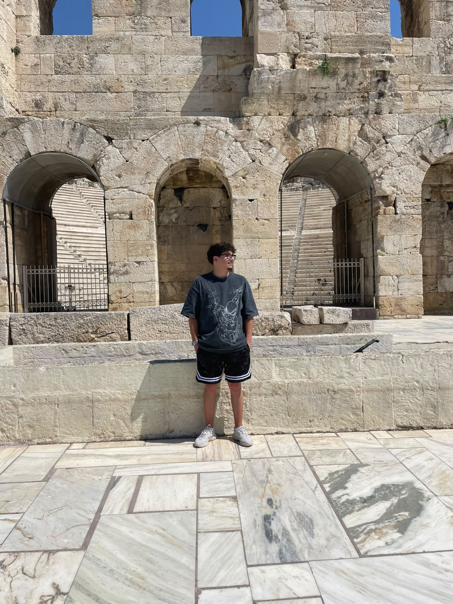

Quem sou eu

Sou estudante do Curso Técnico Superior Profissional em Desenvolvimento para Dispositivos Móveis, com formação anterior em Multimédia. O meu percurso permitiu-me desenvolver interesse tanto pela componente técnica como pela componente criativa, passando por programação, desenvolvimento de aplicações, design, edição e modelação 3D. Gosto especialmente de projetos onde consigo juntar estas áreas e transformar uma ideia inicial numa experiência funcional e visualmente interessante.
Tenho um interesse particular por Game Development, sobretudo pela criação de mecânicas, sistemas de gameplay, experiências interativas e ambientes 3D. Gosto de perceber como diferentes sistemas de um jogo funcionam em conjunto e de experimentar novas formas de melhorar a experiência do utilizador. Atualmente, procuro desenvolver estas competências através de projetos práticos, explorando tecnologias como Flutter, Dart, Godot, GDScript e Blender, enquanto continuo a construir o meu portefólio e a aprofundar os meus conhecimentos na área de desenvolvimento.
Os meus hobbies
- Gaming
- Game Development
- Edição
- Guitarra
O que quero melhorar
- Desenvolver competências na área de programação.
- Melhorar a visão artística na modelação 3D.
- Aprender novos acordes para guitarra.
Links favoritos
YouTube
Este eu diria que é das melhores fontes de aprendizagem usadas por muita gente. É onde procuro vídeos extensivos sobre Game Development, programação, design e modelação 3D. É também uma plataforma onde consigo encontrar inspiração para os meus projetos, além de a usar no meu tempo livre para entretenimento.
É a plataforma onde leio discussões sobre a indústria e os programas que uso, além de dúvidas muito específicas serem várias vezes esclarecidas por lá. É também uma plataforma onde consigo encontrar inspiração para os meus projetos e onde consigo partilhar os meus projetos com a comunidade.
Udemy
É uma plataforma onde posso aprender novas competências e tecnologias através de diversos cursos online. É dos melhores sítios com imensos profissionais a ensinar, com cursos que vão desde o nível iniciante até ao avançado.
O meu horário
Em ecrãs pequenos, podes deslizar a tabela para o lado.
| Horário | Segunda-feira | Terça-feira | Quarta-feira | Quinta-feira | Sexta-feira |
|---|---|---|---|---|---|
| 9:00 - 11:00 | — | — | — | Programação Web | CDJD |
| 11:00 - 13:00 | — | — | — | Programação Web | CDJD |
| 13:00 - 14:00 | — | — | — | — | — |
| 14:00 - 16:00 | Marketing Digital | Empreendedorismo | PDMIII | — | Projeto |
| 16:00 - 18:00 | Marketing Digital | Empreendedorismo | PDMIII | — | Projeto |